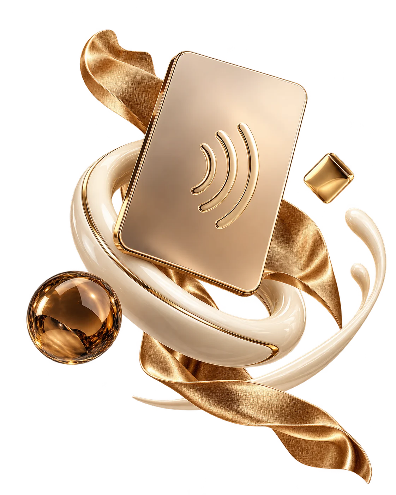
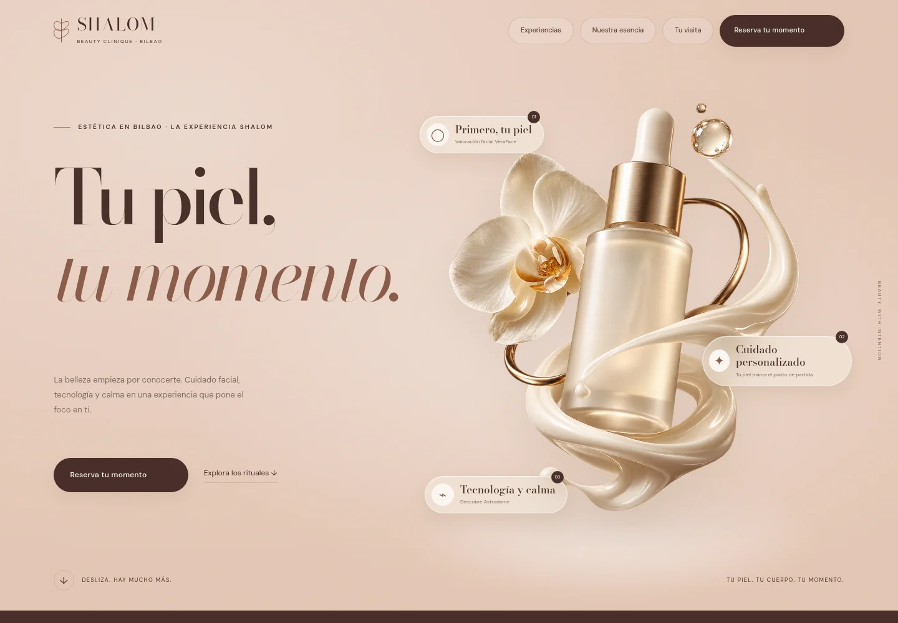
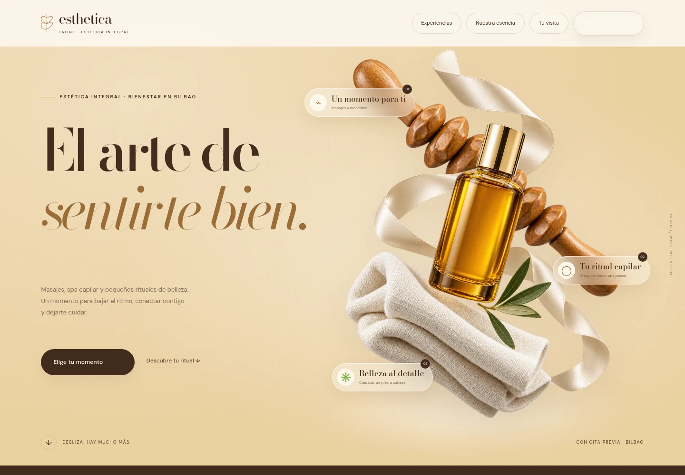

Una web que
se siente tuya.
Identidad visual, composición editorial y una experiencia clara, cuidada en móvil y escritorio.

Una web que se siente tuya. Diseño, contenido visual y experiencias digitales para marcas que tienen algo especial que contar.
La forma en que recibes a tus clientes. Lo que cuidas. Lo que haces diferente. Diseñamos una presencia digital que parte de esa esencia y la convierte en una experiencia que se recuerda.
Diseño, imagen y recorrido. Cada pieza tiene una intención; todas cuentan la misma historia: la tuya.
Identidad visual, composición editorial y una experiencia clara, cuidada en móvil y escritorio.
Vídeos e imágenes para enseñar tus servicios, tu espacio y los detalles que hacen que merezca la pena visitarte.
Catálogos, consultas y recorridos de reserva pensados para que tus clientes encuentren lo que buscan.
Explora la demo de reservas ↗Explora dos propuestas de belleza y bienestar. Una misma atención al detalle, dos formas muy distintas de sentirse.


Propuestas de diseño, no proyectos publicados ni testimonios de clientes. La agenda de Shalom funciona en modo demostración.
Empezamos por entender tu marca. El diseño viene después, con intención en cada decisión.
Qué haces, a quién te diriges y qué quieres que sientan al encontrarte.
Un universo visual, una voz y una dirección que conecten con tu esencia.
Imágenes, contenido, diseño e interacción para construir el recorrido completo.
Revisión en distintos tamaños, navegación y pruebas del siguiente paso.
El proyecto puede plantearse de forma conjunta: primero definimos qué quieres comunicar y después el alcance de la web y el contenido. Las piezas y el presupuesto se acuerdan antes de producir.
No. Son propuestas visuales para explorar una posible presencia digital. Los datos publicados se basan en el material facilitado y deben validarse con cada negocio antes del lanzamiento.
Sí. Puedes solicitar un horario con datos ficticios, consultar la solicitud y cancelarla. La agenda evita solapes, pero no genera citas reales ni envía mensajes al centro.
Abre «Tu próximo proyecto», resume lo que necesitas y descarga tu briefing. Así tendrás un punto de partida claro para compartirlo con Tap & Go. Este formulario no envía una solicitud automáticamente.
Una buena conversación es el primer paso. Prepara tu idea y empecemos a darle forma.